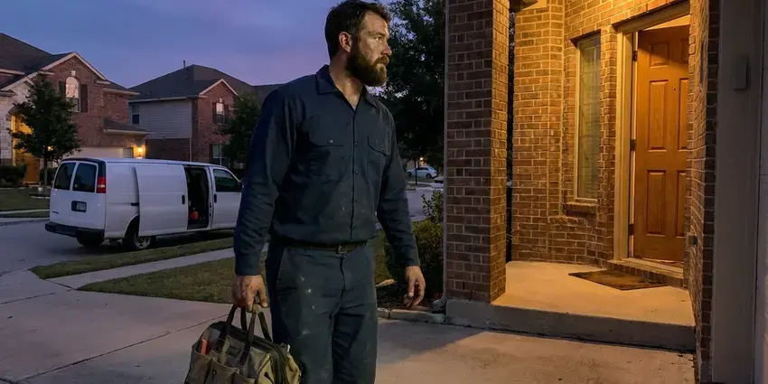

Gas Water Heater Repair in Steele Creek, AK
When your gas water heater acts up in Steele Creek, AK, you need a quick and reliable repair. CKN Plumbing provides prompt, expert service to restore your hot water.
- Same-Day Gas Heater Repair
- Guaranteed Workmanship
- Fast, Local Service
- Guaranteed Work

Reliable Gas Water Heater Fixes in Steele Creek, AK.
Our team is standing by to provide the professional help you need to get your hot water flowing again.
Licensed Gas Water Heater Repair in Steele Creek, AK With Safety Checks Included
CKN Plumbing repairs atmospheric vent, power vent and direct vent gas water heaters in Steele Creek. We work on thermocouples, thermopiles, pilot assemblies, gas control valves, burner cleaning and flue repairs on natural gas and propane heaters.
Our expertise includes:
- Honeywell and White-Rodgers gas control valve diagnosis and replacement
- Diagnosing and repairing pilot light failures
- Power vent blower, pressure switch and flue draft fixes

Additional Plumbing Repair Services in Steele Creek, AK
We offer expert plumbing repair services across Steele Creek, AK to fix leaks, restore flow, and keep your system running smoothly.


Customers
Why Choose CKN Plumbing for Gas Water Heater Repair in Steele Creek, AK?
Our commitment to quality goes beyond just fixing the problem. We aim to provide lasting repairs that improve your gas water heater's performance and longevity, and you can count on our skilled plumbers to deliver solid service every time.
- Clear Pricing, You will receive a detailed estimate before any work begins, so there are no surprises.
- Long-Term Fixes, Our repairs focus on durability and efficiency, keeping costs down in the long run.
- Draft Verification, We check that exhaust gases leave the home through the flue and do not spill back.
Citywide Coverage
From historic districts to new developments, our technicians are dispatched quickly across Steele Creek to address your gas water heater issues. We make sure our service reach covers all corners of the community for prompt repairs.
Experienced Team
The team has handled everything from basic pilot repairs to power vent motor replacements and flue corrections. That range means fewer unknowns on your service call.
Safety-First Approach
Carbon monoxide is a real risk when venting fails, so we check draft and look for signs of spillage or corrosion at the draft hood. If we find a hazard, we explain it and make the unit safe to use.
Trusted Certified Steele Creek Plumbing Services Professionals
At CKN Plumbing, we take pride in providing licensed, certified plumbing services throughout Steele Creek, AK. Backed by leading industry credentials, our experienced plumbers combine technical skill with genuine customer care. Whether it is repair, installation, or maintenance, we follow strict safety and quality standards to deliver long-lasting results you can trust.
Call Us Now PHCC Plumbing Contractor Recognition
PHCC Plumbing Contractor Recognition Better Business Bureau (BBB) Accreditation
Better Business Bureau (BBB) Accreditation Angi Certified Pro
Angi Certified Pro ISO 9001 Quality Management Certification
ISO 9001 Quality Management CertificationDependable Gas Water Heater Repair Services in Steele Creek, AK
Gas Control Valve Replacement in Steele Creek, AK
The gas control valve controls temperature and shuts off gas if the pilot goes out. Newer valves from Honeywell and White-Rodgers use status lights that blink codes when something fails. If the valve itself has failed, we replace it with an exact match or listed universal model. We leak test and verify temperature control afterward.

Pilot Light Repair in Steele Creek
A pilot that will not light or will not stay lit is the most frequent gas water heater call. Causes include a worn thermocouple, a clogged pilot orifice, a bad piezo igniter or a tripped thermal cutoff. We test the thermocouple output with a meter and clean or replace the pilot assembly. Most pilot repairs are finished in about an hour.
Burner Assembly and Venting System Repair in Steele Creek
A worn burner assembly can result in poor heating or unusual noises. We carefully inspect the burner for blockages, corrosion or wear. We also check the venting system for proper draft and obstructions, which is vital for safe operation and preventing carbon monoxide buildup in your Steele Creek home. Proper venting is a critical safety consideration.
Flammable Vapor Sensor Repair in Steele Creek
Most gas water heaters built in recent decades have a flammable vapor ignition resistant design. A sensor or flame arrestor screen shuts the burner down if it senses vapors or overheating. Lint and dust in garages can clog the arrestor and trip the system. We clean the combustion chamber and replace sensors or thermal switches as required.
Cost-Effective Gas Water Heater Solutions in Steele Creek, AK
We always aim to provide the most cost-effective repair option for your gas water heater in Steele Creek, AK. We give transparent pricing before any work begins, so you know exactly what to expect. Sometimes a repair can extend the life of your unit by years, while other times replacement is the more sensible financial decision. We help you make the best choice.
Gas Water Heater Repair Cost in Steele Creek, AK
Thermocouple and pilot repairs typically cost $150 to $350. Gas control valve replacement often runs $350 to $700, and power vent blower repairs can range from $400 to $800. A new gas tank installed typically costs $1,600 to $3,000 depending on size and venting. We help you choose based on tank age and condition.
Pilot Light and Burner Issues in Steele Creek
A common problem with gas water heaters is a pilot light that won't stay lit or a burner that fails to ignite. This can be caused by a faulty thermocouple, a dirty pilot tube or issues with the gas control valve. Our technicians in Steele Creek are skilled at diagnosing these components and performing the needed repairs, whether it is cleaning, adjusting or replacing parts. We ensure proper gas flow and ignition for consistent hot water.

Venting and Draft Repair in Steele Creek, AK
Atmospheric gas water heaters rely on a properly sloped metal flue to carry exhaust out of the home. Disconnected sections, rusted draft hoods and poor slope can let combustion gases spill back. We repair or replace vent sections and confirm draft with a test. Proper venting is critical for your family's safety.
Gas Water Heater Repair Near Me in Steele Creek, AK
Garages gather dust and lint that cause gas water heaters to shut down. Our team knows how to clean and protect these units in local conditions. That means fewer pilot outages following the repair.
For reliable gas water heater repair near me in Steele Creek, AK, CKN Plumbing is your trusted local expert. Our technicians work throughout the area, allowing for quick response times when you need us most. We understand the plumbing challenges faced by Alaska homeowners.
CKN Plumbing at a Glance
- Licensed and insured plumbers serving Steele Creek, AK
- 24/7 emergency service with same-day scheduling
- Upfront, flat-rate pricing before work begins
- 4.9-star rated by 309+ Alaska customers
Steele Creek Map
Steele Creek Information
- Population
- 6,437
- Area codes
- Local
- Service area
- Steele Creek and communities within 40 miles
- Nearby
- Badger, Fairbanks, College, Chena Ridge
Keeping your gas water heater in top condition is key for consistent comfort, especially during cooler months when hot water demand is higher.
Expert Services
Trust our professionals for reliable CKN Plumbing solutions in Steele Creek, AK.
Our Specialized Plumbing Services in Steele Creek, AK
At CKN Plumbing, we provide a complete range of plumbing services across Steele Creek, AK. From leak detection to full system installations, our team ensures fast, precise, and affordable service for both residential and commercial properties. Explore our core services below:


How Our Gas Water Heater Repair Process Works in Steele Creek, AK
From your first call to the completed repair, CKN Plumbing follows a careful approach so your gas water heater repair in Steele Creek, AK is thorough and effective.
Request a Quote
Call (928) 470-9007 and describe what is happening, such as no pilot, a status light blinking or a gas smell. If you smell gas, leave the home first and call your gas company.
Inspect and Diagnose
We test the pilot, thermocouple, gas valve, burner and venting. You get a flat price for the repair before we begin.
Repair and Safety Test
We replace the failed parts, light the unit and run it through a heating cycle. Gas connections are leak tested and draft is verified.
Frequently Asked Questions About Gas Water Heater Repair in Steele Creek
The cost of gas water heater repair in Steele Creek, AK can range from $150 to $800, depending on the complexity of the issue and the parts required. Minor repairs like a thermocouple replacement might be on the lower end, while a gas control valve replacement could be higher. We provide a detailed estimate after finding the problem.
CKN Plumbing stands behind our work with a solid warranty on parts and labor for all gas water heater repairs. Specific warranty details will be provided at the time of service, giving you peace of mind for your investment in your Steele Creek, AK home.
Gas tank water heaters usually last 8 to 12 years. Hard water sediment and skipped maintenance can shorten that.
Following the label instructions to relight a pilot is generally safe. If the pilot will not stay lit, or you smell gas, stop and call a professional.
Most common gas water heater repairs can be finished within 1 to 3 hours. More complex issues, or cases where special parts need to be ordered, could extend the timeline. We aim for efficiency without compromising safety or quality.
Yes, if venting is blocked, disconnected or drafting poorly. We check draft on every repair, and we recommend carbon monoxide alarms in every home with gas appliances.
A thermocouple is a safety device in a gas water heater that senses if the pilot light is lit. If it doesn't sense heat, it shuts off the gas supply to prevent gas leaks. A faulty thermocouple is a leading reason for a pilot light not staying lit and is a vital safety component.
Yes. Labor is warrantied and parts carry manufacturer coverage. We list the terms on your invoice.
What People Are Saying About Our Plumbing Experts?

Laura S.
I scheduled a water heater replacement, and the team made the process smooth and affordable. The new unit works perfectly, and they cleaned up after completing the job.
Water Heater Replacement · Fishhook, AK
Daniel K.
A pipe burst at 11 pm and they actually answered. The plumber showed up within the hour, shut everything down, and had us back to normal the next morning. Could not ask for more.
Emergency Plumbing · Tanaina, AK
James P.
Our commercial plumbing system had a leak under the sink, and CKN Plumbing handled it professionally. The plumbers arrived quickly and restored everything without disruption to our customers.
Commercial Plumbing · Badger, AKRobert G.
The trenchless sewer replacement saved our front yard. They walked us through the camera inspection footage first so we knew exactly what we were paying for.
Sewer Line Replacement · College, AK
Mark T.
When our office needed drain cleaning, CKN Plumbing provided quick, reliable service. The plumber arrived on time and made sure every drain flowed perfectly before leaving. Very satisfied.
Drain Cleaning · Chena Ridge, AK
Emily R.
I called CKN Plumbing for plumbing repair, and the technician was fast, polite, and thorough. They explained the problem clearly and fixed it the same day. I will definitely hire them again. Highly recommended!
Plumbing Repair · Fairbanks, AK